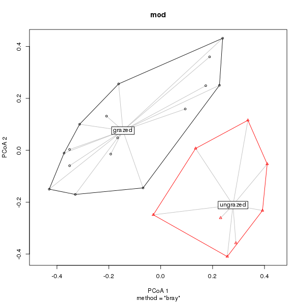
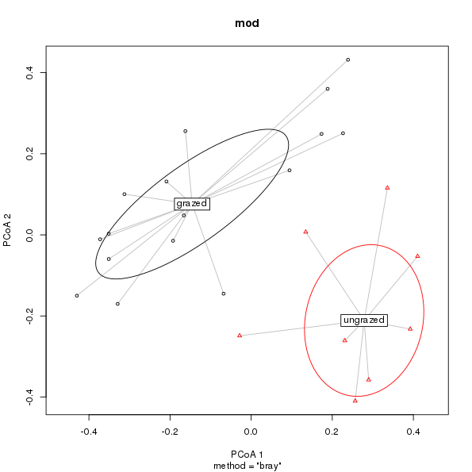

A new default plot for multivariate dispersions
tribulations of base graphics programming
This weekend, prompted by a pull request from Michael Friendly, I finally got round to improving the plot method for betadisper() in the vegan package. betadisper() is an implementation of Marti Anderson’s Permdisp method, a multivariate analogue of Levene’s test for homogeneity of variances. In improving the default plot and allowing customisation of plot features, I was reminded of how much I dislike programming plot functions that use base graphics. But don’t worry, this isn’t going to degenerate into a ggplot love-in nor a David Robinson-esque dig at Jeff Leek.
The original plot method for betadisper() hardcoded all the linetypes, colours etc for features on the plot. I didn’t mind this on bit; ordination plots are difficult to programme, and, to get anything half-way publishable, the user will usually need to build a plot up from component parts using the low-level tools we provide. Also, it’s kind of a theme in vegan to provide a useful, but not neccessarily pretty, default plot for our plot methods, whilst allowing for all manner of customisation via lower level methods like points() and lines(), plus custom tools such as ordiellipse() and ordiarrows().
However, in practice users it seems aren’t always satisfied with this situation and expect default plots to be, well, more.
In its original incarnation, plot.betadisper() showed data points and group centroids embedded in a principal coordinates-derived Euclidean space, with convex hulls enclosing each group’s data points and line segments joining data points with their respective centroid. Centroids were in red, segments blue, and hulls black, all of which were hard-coded. More egregiously, the plot didn’t provide any indication of which group was which. I was OK with this as the principal coordinates plot was only really meant as a visualisation of what the method did; other plots and analyses that we provided in vegan were needed to assess significance of differences in dispersions etc.
There was nothing stopping me, however, from providing a more featureful version with full user control over the various aspects of the plot. Nothing that is except a deep reluctance to write — in the first place — and then subsequently maintain a function with a gabillion tortuously named arguments to differentiate the half dozen settings of cex et al for different features.
There’s a real trade off between flexibility and complexity in plot methods like this. The situation is much easier to manage with lower-level functions to draw the individual features of the plot; invariably each lower-level tool requires a smaller subset of parameters, and if you code your function well, you can usually achieve all you need by passing ... on to the low-level base graphics functions your function uses. You can’t do this with a plot method that combines several lower-level features into a single plot; if you want to allow the user to independently control the colour of three separate plot features you’re going to need three different variations on the argument col. Multiply that by all the parameters you want to allow the user to tweak, and you have the recipe for a mess. Either that, or you need to accept lists of parameters for each feature, which aren’t exactly intuitive for casual users.
With the new plot.betadisper() method I took a compromise position, allowing some additional flexibility whilst limiting the argument bloat that is an unfortunate side effect of high-level base graphics plot methods.
## you'll need the development version of vegan from github for this
## devtools::install_github("vegandevs/vegan")
library("vegan")
args(vegan:::plot.betadisper)
function (x, axes = c(1, 2), cex = 0.7, pch = seq_len(ng), col = NULL,
lty = "solid", lwd = 1, hull = TRUE, ellipse = FALSE, ellipse.type = c("sd",
"se"), ellipse.conf = NULL, segments = TRUE, seg.col = "grey",
seg.lty = lty, seg.lwd = lwd, label = TRUE, label.cex = 1,
ylab, xlab, main, sub, ...)
NULL
Michael Friendly supplied code to allow some of the original plotting parameters to take vectors, one per group to facilitate their differentiation. I extended this to allow couple more standard parameters to be set by the user. Rather than have separate settings for convex hulls and confidence ellipses, both use the same general parameters. Only the line segments between data points and their centroid get any special treatment, in the main because they add quite of lot of components to the plot and being able to style them to sit in the background is quite useful.
We’ll look at the new plot using the main example in ?betadisper
data(varespec) # load example data
dis <- vegdist(varespec) # Bray-Curtis distances between samples
## First 16 sites grazed, remaining 8 sites ungrazed
groups <- factor(c(rep(1,16), rep(2,8)), labels = c("grazed","ungrazed"))
mod <- betadisper(dis, groups) # Calculate multivariate dispersionsGiven mod the plot method produces a labelled plot with convex hulls and line segments
plot(mod)
plot.betadisper()Also at the suggestion of Michael Friendly, I added code to draw confidence ellipses, of which there are several flavours
- standard deviation ellipses
- standard error ellipses
with the default being to draw a 1 standard deviations ellipse (ellipse.conf controls how many standard deviations or errors are drawn, or which 1 - α confidence ellipse is drawn.)
plot(mod, hull = FALSE, ellipse = TRUE)
plot.betadisper() showing 1 standard deviation ellipses about the group medians.As a default plot, the new version is lot nicer and affords the user a reasonable level of flexibility to customise the plot without the number of arguments exploding uncontrollably. The code used to produce this is now a good deal more complex and because I grafted it on to the existing code it probably isn’t a clean or efficient as it could be.
The new function also reaffirms my dislike of providing high-level plot functions for a package that uses base graphics. As a means for producing plots, I like base graphics, for certain things. However, I’m also comfortable building plots up from low-level parts and can easily write code to quickly produce the plot I want. Clearly, from the emails and questions I receive, not all the users of betadisper() are so able or inclined. Providing a reasonable level of customisation to a higher level plot using base graphics is an exercise in tediousness and inelegance. It doesn’t look nice to add dozens of arguments just to enable the user to tweak a dozen tiny features of the plot. I also find it demotivating writing code like this and the accompanying documentation.
In this regard, ggplot is a much better system for producing customisable higher-level plots. All of the code for handling grouping, colours, line types etc is built into aesthetics and geoms, and a theme or customised palette or scale (such as the increasingly popular one supplied by the viridis package) allows a concise and principled way of changing the look and feel of a plot that tranfers across all plots created using ggplot. If you want to customise plot.betadisper’s output, you need to learn the half dozen particular arguments that I chose to implement. Yet once learned are these skills useful elsewhere? If you’re lucky, you can expect some semblance of consistency across a package, but beyond that, the user ends up having to learn the particulars of the plotting functions in each of the packages they end up using.
This is wasted effort and a considerable obstacle to overcome as a new R user. It’s taken me a while — largely because on its own ggplot lacks features needed for every-day use by an academic — to realise this, but I’m glad I have. If anything, whilst I am pleased with the changes made to plot.betadisper(), my resolve to spend more time working on ggvegan over the summer has strengthened as a direct result of writing this base graphics code.
I never expected to find myself writing that…